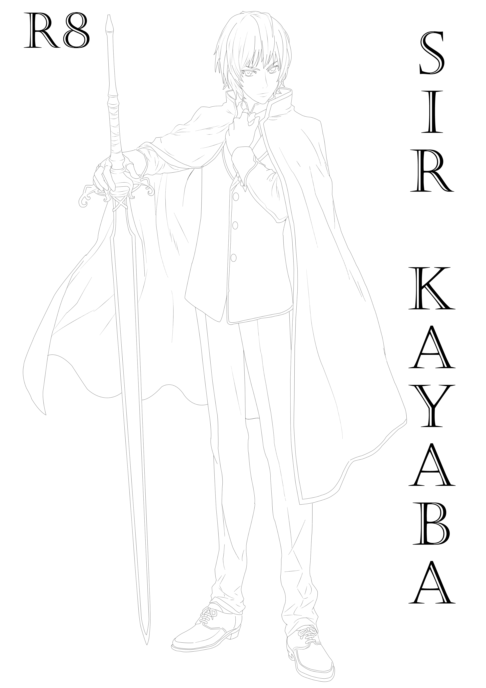

Takeshi wakes up and sees that he is in the middle of a jungle. " Is this a dream?", said Takeshi. He pinched himself and said," So it isn't! Then where am I? How I got here?" He had many questions with no possible answer. About a distance of ten steps was lying down a girl. He stood up and walked there. He realized as if maybe he knew her. She was Aoyama. He did not recognize her and moved on, leaving her behind.
After walking for some distance, he reached on the edge of a cliff from where he saw a small village. He decided to go there and know what's happening. On his way he saw a stream, a very shallow one. He sat there and rested for a while. " The stream looks clear. I can drink water from it." When he saw himself in the stream, he realized his whole outfit has changed. His clothes were old traditioned, he was bare foot and didn't even realize it. By not giving much thought he moved in the direction of village.
Soon he reached the village. It was very lively; children were playing on the streets. While roaming he moved through all the streets and market. Finally, he sat beside a well. " How did I end up here?", he thought.
" It's so unmannered of you to leave a girl behind, without helping her!", a girl sitting near him said.
" You were stalking me all the way.", said Takeshi.
" You walk so fast. I had to run to catch up with you. It is so difficult to run for a girl bare foot. You know.", replied Aoyama.
Takeshi looked at the girl, he realized she was the one lying down on the ground back then and also, she was the one who moved around him before he got in this world. He was himself not sure that is this another world or not.
" Oh! Now I remember. You were the one who kept buzzing around me like a bee. What is your name?", said Takeshi in a flat voice as usual.
" What! You forgot my name. You left me alone in that wild forest.", shouted Aoyama.
" You were conscious when I saw you.", said Takeshi suspiciously.
" Am... umm... em... I was unconscious but I felt like someone was staring at me. So, you were staring at me! It's not good you know.", said Aoyama nervously.
Takeshi looked with unsatisfied eyes.
" Leave that aside. Do you know where we are and how did we got here?", asked Aoyama.
" I do not know. No idea.", answered Takeshi.
They sat still, without speaking a word after this. But Aoyama was uncomfortable sitting just like that and her expression changed in few seconds. She got frustrated. Then at last when she couldn't take it long, she said," Where are you going to spend night? Have you eaten something?" to which she got a reply," I do not know."
" Is there something you know?"
" I remember how to speak."
" We have to talk to someone for food and shelter."
" I am not good at socializing."
" Fine. I'll do it myself."
She went. Takeshi it would be the best if she never returns. In a few minutes she returned and then said," I handled with food and our stay for the night." That was quick, very fast, Takeshi imagined, girls are amazing.
" But tomorrow you have to do something as you owe me," she said.
" Ehh! How do I owe you?"
" For today's food and stay."
" So, I also have a share."
" Yes! What were you thinking, I did all of this for myself alone and being selfish, now showing off you?"
" YES! Yeah."
" You are hopeless!"
They found an inn where they could get some food and spend the night then think about other things later. They paid the owner through some pieces of silver. There they understood there was no currency and trade mainly used barter system.
Surprisingly, though everything was old traditioned, the technology was much far ahead of their time. Very mechanised, fit for health and no harm to nature.
The gate especially attracted Aoyama. Gates were only opened for the authorized person of that room. Not Only that but it will not be even visible to others, they will see the person walking through the wall. " Amazing technology!", exclaimed Aoyama. " Yeah, yeah.", said Takeshi with low interest.
When they were returning from dinner, they saw two kids and one of them was crying.
" What happened? Why are you crying?", asked Aoyama in a polite way.
" I cannot find my specs.", said the girl who was crying.
" I told you to keep another spare glass to search for your specs," said the boy.
" I am searching for my spare specs which I kept to use when I cannot find my original specs. Now I think I should keep third for searching them," replied the girl.
" Umm... we may...", Aoyama tried to say something when Takeshi interrupted saying," We?"
" I may...", she continued," help you to find your specs."
" Thank you!", said the girl.
" By the way what is your name?", Aoyama asked.
" I am Aki," replied the girl.
" I am Ekki, nice to meet you, smart lady.", said the boy.
" I am Aoyama and this is my friend Takeshi."
' From when I became her friend', Takeshi thought but did not split out. ' I should have said it on her face.'
" Mrs. Aoyama, I needed someone to help me out. You look smart, will you?", asked Ekki.
" OK! I f I can be of help, I will."
" I used this mop," Ekki showing the mop," to clean everything but how to clean it?"
" Hee... umm... you can hit it against some object, so that the dust gets out and it gets clean," replied Aoyama.
" You are so smart, thank you," replied Ekki.
" Kids are so innocent and naive," whispered Takeshi but he was actually thinking,' I started to think this boy was clever with how he greeted her but he is sure dumb.'
" Really. But cute also," replied Aoyama.
The boy started to hit the mop against Aki. " What are you doing?", asked Aoyama.
" Hitting my mop to clean it," Ekki replied.
" Really cute ha. Go on to handle them," said Takeshi.
Aoyama said," Don't hit it against her. Do it with some object." "Understood!", replied Ekki.
Aoyama went for searching Aki's specs and Takeshi went to sleep. " Ahh! Who keeps specs to search for specs? Foolish!", said Takeshi to himself.
Next day both of them left early to search for clues so that they may understand how will they get back home. Wandering for some time and understanding the system of this world.
They reached the centre of the village. There they saw a crowd. For understanding the situation, they peeked what was going on.
" We have come to know by our spies that Daring Lord is planning to conquer the north of our village the 'Sacred Valleys'. We need to prepare a rebellion force against Daring Lord for his unjust treatment..."
" Who's that?", Aoyama asked.
Takeshi replied," A leader probably. He could be the chief or the elder of this village."
" I hereby as the chief of this village ( Rousedour ), I Kishouko will take charge of this operation. I need your support.", said the man.
" Yeah! Sure!", shouted crowd.
' Looks like we are in the wrong situation and on time,' thought Takeshi.
" Hey! you two over there," said Kishouko pointing at Aoyama and Takeshi," I never saw you here before and you don't look of this village. Who are you? Where did you come from?"
" I am Aoyama and this is my friend Takeshi. We came from that direction."
' Friend again' thought Takeshi.
" There! From Zefferlands! Catch them. They came from dark kingdom."
Both of them were caught. They were prisoned in a dark room with door as only exit. they cannot see the door also.
" You made us get end in here," said Takeshi.
"Me! It's your fault for not speaking and I was dying out of nervousness back there," replied Aoyama.
No sooner did they start to think how to escape than a philosopher entered.
She asked them to follow her. She took them in a dorm. They were made to sit for a long time. Although they were given to eat. Then she spoke," You two are not of this world. Are you?"
" Yes! How do you know?", said Aoyama.
" I can tell. So, have you found any clue why and how did this happen?", she asked.
" No, we don't have any clue," replied Aoyama.
" Well, I haven't introduced myself yet. I am Shizuku and I am a philosopher and researcher. If I say more precisely than, I secretly research on paranormal phenomenon and also want to find the truth of the world," she said.
"Oh! I am Aoyama and this is my friend Takeshi."
' Friend again. How many times is she going to say that.', thought Takeshi
Shizuku looked at Takeshi with suspicious eyes then she looks at Aoyama and says," Well then, I may put forward my theory. All the particles in the universe are interlinked with one another. The parallel worlds exist because of these links between them. One may get into another parallel world because of some circumstances. In this case both of you got transferred in this realm from your world together so there must be some connection between you two."
" I don't know this girl," said Takeshi.
" That's means!", said Aoyama.
" We are from same school," said Takeshi.
" There are hundreds of more students in that school. This is not a reliable point," said Shizuku.
" You think there is a special connection. I wonder what it is," said Aoyama.
" What are you exactly thinking! It's nothing like that," said Takeshi," this girl here can have her theory wrong also."
" True. But it is hard for me to believe in it that you both got here out of nowhere for no reason," said Shizuku arrogantly.
" But I don't know it's a co-incidence or something else, I clashed with her first while on my way to home. Back then she was weirdly dressed. The very next day I saw her in my school. Now that I think of it your present dress matches what I saw."
" Don't speak nonsense! I never wore something like this before but now that you mention it. On the day when festival was announced before that day. Yes, the exact previous day when you asked me my name, while returning I saw you hiding, from someone maybe, then you ran off. You were dressed like a warrior but it looked very funny," said Aoyama.
" Why would I wear something like that?", said Takeshi.
" Hmm... This may be the case. This can be the connection.", said Shizuku.
It was soon dark so they stopped with all the talks. " I have a last question. You are executing us on the chief's order or you helped us escape?", asked Takeshi.
" You don't look like it but you are smart. As the things are going on, I am doing everything for your best. It is good for you.", replied Shizuku in person.
Takeshi felt like he cannot trust her. At least for now.
2 WEEK LATER...
Aoyama was so natural that as if she was living here for years. No one could figure out two things for sure, first that Aoyama was not of this world and second, what Takeshi was thinking. His acts, words and thoughts are all different. " Don't you think we should find a way of returning back home," asked Takeshi to Aoyama.
" I work more than you do. From all the work and information, I gathered, we should aim for defence forces of this world. Rebel going on is an opportunity for us," said Aoyama.
" Why?"
" They say there is a door which allows people to go to another worlds," said Aoyama.
" Oh! You are taking it wrong. There is no door...", said Shizuku.
" What? But I heard...", said Aoyama.
" You heard correct but wrong. Half-baked knowledge! The place you are talking about is called 'Great Door'. Many incidents of parallel world occur there so because it connects the worlds. That's why common people think it as door to another world," explained Shizuku.
" So do you have any idea how we can go back?", asked Takeshi.
" May be... maybe not," said Shizuku and left.
" She is surely hiding something from us," said Takeshi.
" You think so. She did not harm us till now and helped us also," replied Aoyama.
" It's just a matter of time."
The village, Rousedour, was rebelling against Daring Lord. They started forming forces and asked for relative villages to join. Takeshi and Aoyama also joined the forces. Aoyama gathered all the information about whom they were going to fight. Daring Lord, who conquered the Veunedula territory and at present is just causing misery everywhere, had no past. No one knows from where he originally came. He does not work with any organisation," How was he able to take over one of the most powerful country all alone?", wondered Aoyama.
" He did not fight. It is simple that he didn't but if he did than he is no human," said Takeshi.
" Then the territory gave it over to him, a gift!", said Aoyama.
" Not exactly. May be through political outbreak or he blackmailed the King," suggested Takeshi.
The Veunedula kingdom had its first outbreak of rebels in the north-eastern side. However, Takeshi, Aoyama and Shizuku joined the west gate rebellion force. Their main purpose was to get this 'Door' connecting parallel worlds, which is situated parallel to the 'Sacred Valley'. That area was not civilized and consisted mainly forests and mountains. Though the door was a plain along with a waterfall.
They started to reach there with some villagers. The first day of their journey was quite well. The problem started on the fourth day, soldiers of Veunedula kingdom were hiding in the dark forest. In the evening they attacked the tired villagers. A few got killed, two were injured and five escaped. Aoyama got injured also and Shizuku handled the situation. She put some ointment on Aoyama's injury. Takeshi said that it would be the best to flee now.
They ran through the woods and were almost able to escape but two soldiers appeared in front of them. Takeshi takled one of them and the other was beaten up by the girls. Takeshi was taking a lot of time fighting him but the girls finished off easily. Finally, Takeshi won over.
" Do some exercise daily, lazy boy," said Shizuku and both of the girls laughed.
" Ha ha... very funny!", regretted Takeshi.
No sooner did more soldiers run after them than a guy came to save them. " This way... follow me...," he said. His face was covered. They followed him as the situation was getting worse and they had no other idea. They all ended up in an underground cave.
" You all will be safe here for the time being," he said," looks like the soldiers left."
He lit up fire and looked at the strangers he saved. Seeing Shizuku he approached her and bent on his knees, held her hands then said," Miss, what your name may be whose beauty is like a ray of light in darkness and fragrance like the sun."
" How rude. He is ignoring us," said Aoyama.
" We are at present in a cave and it is night. The fire you lit is the ray of light you are talking about not her. Have you ever smelled sun? You must have great powers that you were able to smell sun. That too, so nicely that you could make out she also smells the same," said Takeshi in his flat voice.
" Hey are you mocking me?", he urged.
" And I never get any fragrance from her on the first place."
" You idiot!"
" Now when I get any fragrance from her, I will come to know, how the sun smells like."
" Don't forget I saved you!"
" I don't even know you and you have reached to that extent. How to forget someone whom you don't remember? It sounds like a paradox or it is a paradox."
" Hey Takeshi! His voice is familiar. Do you think we know him," Aoyama whispered.
" I felt the same," Takeshi replied.
" Hey! What are you two gossiping about! I am still present here."
" Who are you? Disclose your identity!", asked Takeshi.
" You don't know me! Oh, I did not tell you yet!", he said," Fine. It's about time. I am the true King of Veunedula, Sir Kayaba R8."
" R8!! What a lame!", said Takeshi.
Aoyama said," It must be some kind of 'Royal' and the 'eighth generation' or so."
" Exactly! It is correct! Pretty smart!", said Kayaba.
Aoyama shouted," Kayaba!! You! The famous detective at our school, is here and is a king! How?"
" Aoyama! Then you must be Takeshi. What a vast change in outfit. You are not the same as before. Did these girls influence you?", said Kayaba
" Ha ha... quit joking around!", said Takeshi.
Many questions arose between them so to clear most of them Kayaba told what he knew.
" I was born in this world," explained Kayaba.
He told that while fighting near the Sacred Valley, he got hurt and was unconscious. When he woke up he was in a different world. He was in a hospital but he was not alone who got here. The knight he was fighting to also got teleported there. The knight was Darwin. " For the sake that our identity is hidden I made him my friend," said Kayaba," I spent two years in your world," he continued," Then something miserable happened. I realized Darwin's true intentions but I lied, I lied to myself. I knew it all along but still. I never faced the reality and kept it hidden." "
After the incident both of them returned back to their world. It was only a few hours from when they left. Then Kayaba had an intruder who conquered his kingdom politically. He black mailed Kayaba and he had to retreat. The intruder now is the King of Veunedula. " Daring Lord!", said Shizuku. Kayaba grossed and said," He is no one else but Darwin!"
" Darwin! Him again," negotiated Takeshi.
" So, this may be the connection of your presence here," said Shizuku.
" That reality! We knew it. That was the trigger. May be, now that I think about it; is possible," Aoyama said.
After this they did not have any serious conversation. It was soon evening. They gathered food and stuff to spend the night.
" What we will do now?", asked Aoyama.
" We cannot follow our plan anymore. Anything else we have to try," said Shizuku.
Kayaba took out a table and some maps and papers.
" I had no idea King carried items like this," said Takeshi.
" Well, these are one of my knights'. This is his Armor. Put it on."
" Me?"
" Yes! now hurry."
Shizuku and Aoyama looked at the maps. It had many markings on it.
" What are these markings?", Shizuku asked.
" These markings are the places where fight broke out on Darwin's order," said Kayaba," What happened?"
" Nothing!", said Aoyama.
" I asked because you were staring at me."
" No, it's just. Come to think of it your voice was familiar. I made it out. When you did not disclose your identity, I thought I have heard this voice before. And also, you haven't changed, famous detective."
" Back to work!", said Takeshi," But it makes sense why you became detective in our world."
" Any connections?", asked Shizuku.
" Yes, I figured some pattern about it. The first letter of the place. Like here it is R from Rousedour, A from Altar, I from Ice town and S from Sacred Valley," said Kayaba.
Aoyama got puzzled and said," What does it makes, 'SIRA' or 'SARI' or 'ISRA' or 'AIRS' or may be..."
"Stop it! You are not getting it at all!", said Takeshi.
" Sacred Valley is also called 'Death Valley'. D from it. Maybe the places first letter suits 'DARWIN'. We got D-A-R-I. But W and N are not there," said Shizuku.
" Maybe the small battle at Eternal Mountains, specifically at Wekert," said Kayaba.
" So next possibility is only Nelbert!", said Shizuku.
" Yes, it is vast battle equipped. Then without wasting time we should get there. It is not so far and not so near. On our west."
" What the hell! You all also don't understand the situation right now. I thought Aoyama was the only dumb," said Takeshi.
" What do you mean?"
" Your theory is just to correct to believe in. The world is not as simple as it looks," said Takeshi.
" You mean that it's just diversion or we got the wrong idea? There is something complicated mystery behind?", asked Kayaba.
" Yes and no. You have got wrong way of taking things. Yes, it is true that Darwin is following this first letter strategy and there is going to be a battle in near future at this place but it is a diversion. You got me wrong there on simple and thought it to be complicated. The world is actually a lot simpler than it looks."
" I don't get it," said Kayaba.
" Me neither," said Shizuku.
" Ahh! I should be the most experienced but still I don't understand your puzzles and riddles and code," said Aoyama.
" The security level in this certain area where we are is at high alert and large. Other than any other place, this place is given more importance which means there is something in there. Though your predictions are true, we did not join the forces to take part in wars but to get the way to return back."
" So, we should move through Sacred Valley. Well, I see you are right. There are more guards on duty here," said Kayaba.
" Don't get all excited and think with great concepts like fictional drama. Think simple and logically," said Takeshi.
" So, what's the plan?", asked Shizuku.
They discussed everything and next day, early in the morning, they all left.
They all slowly started to move towards the Sacred Valley. Hiding from the knights, they all reached the opening of Sacred Valley. There were two paths one which leads to Sacred Valley and one to the 'Door'. Before they could think of anything they got spotted. The knights came after them and so they had to run. They got split. Kayaba and Shizuku ran into the Sacred Valley and Takeshi and Aoyama ended up in to the 'Doors'.
They were still being chased. Kayaba and Shizuku found a place to hide. They took cover. Although Takeshi and Aoyama were running blindly, they saw a path going up on the hill. They got up the hill. They had already reached their limits. They reached the top of the hill but they fell on to the steep side. They drifted, rolled and then reached the bottom. They stood up and were surprised to see which was all unexpected. They were back to their own world.
Both were amazed, surprised and astonished. It took time for both of them to realize that they were alone their partner was missing. Takeshi was somewhere else and Aoyama somewhere else. They could still hear the knight's voice like they were chasing them and were very near but cannot see and notice them. Not knowing what to do Aoyama thought to search for Takeshi.
She could not go out with what she was wearing so she took a shawl to cover herself. Takeshi was embarrassed to go out in what was he was wearing, Armor from another world, so he decided to take cover. Hide and crawl to go home. He just was fine that he got back to his own world. He was hiding and moving slowly when he noticed on one of the stores, the date and time and found he was in past. It was when Aoyama saw Takeshi, when she did not know him, dressed like a warrior and hiding. Takeshi though did not notice her. As he realized he was in his past, so he decided to find Aoyama.
" I have to find Aoyama soon," said Takeshi.
Aoyama also realized that she was in her world but in past. She was running, her mind was blank, she could not think of anything. She was just running. She bumped into someone but did not look at him and in hurry left. He was no other but Takeshi. It was Takeshi of the present who walking to his home from school. It was for the first time Takeshi saw Aoyama when he did not know her. She was weirdly dressed, covered herself but still he could make out that much.
Aoyama was running carelessly. She got on road crossing when it was red and was about to get into an accident. She was so afraid to move. She pushed and was saved from getting hit.
" Are you hurt?", asked Takeshi.
" No. Thanks to you," replied Aoyama.
" I was searching for you and found you in a place like this and in miserable situation. Good that I was able to save you."
Takeshi successfully saved Aoyama from car accident but talk about bad luck, both of them get hit by a truck. Both get unconscious after accident.